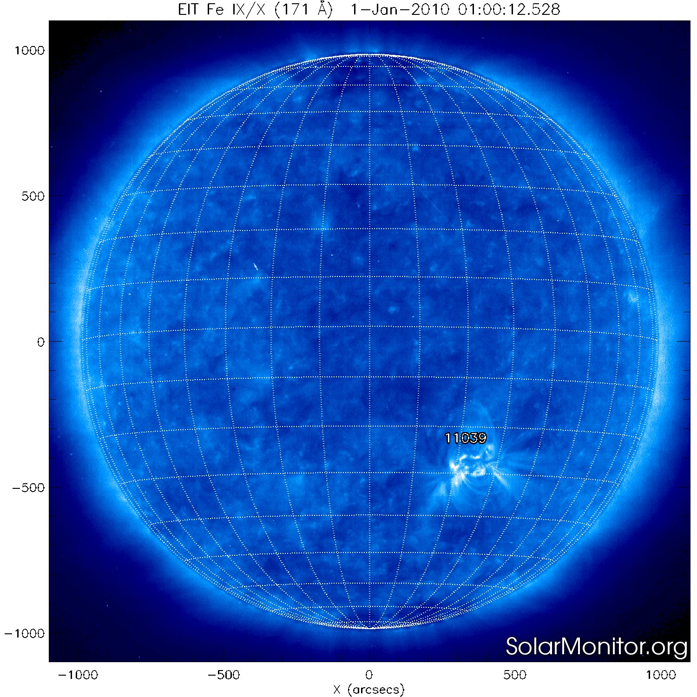
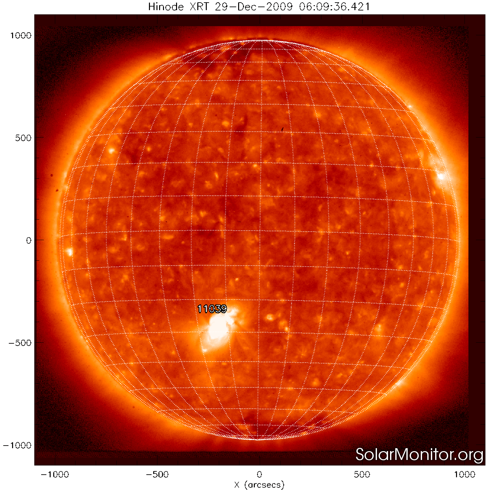
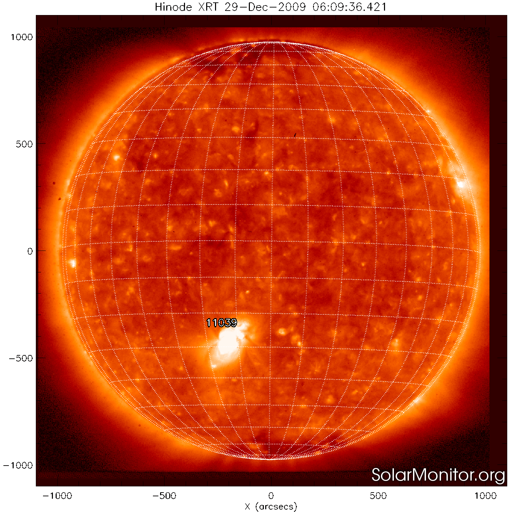

Description
One morning, when Gregor Samsa woke from troubled dreams, he found himself transformed in his bed into a horrible vermin. He lay on his armour-like back, and if he lifted his head a little he could see his brown belly, slightly domed and divided by arches into stiff sections. The bedding was hardly able to cover it and seemed ready to slide off any moment. His many legs, pitifully thin compared with the size of the rest of him, waved about helplessly as he looked. "What's happened to me? " he thought. It wasn't a dream. His room, a proper human room although a little too small, lay peacefully between its four familiar walls.
Content
- Hudson
- Archiva
- FrontEnd
- Heliovo


